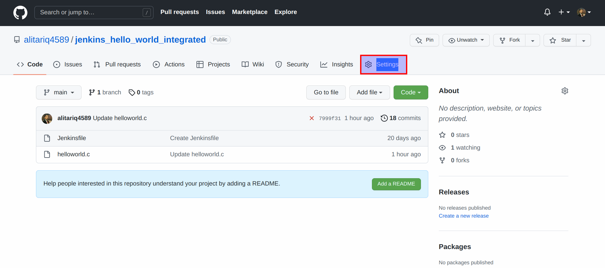
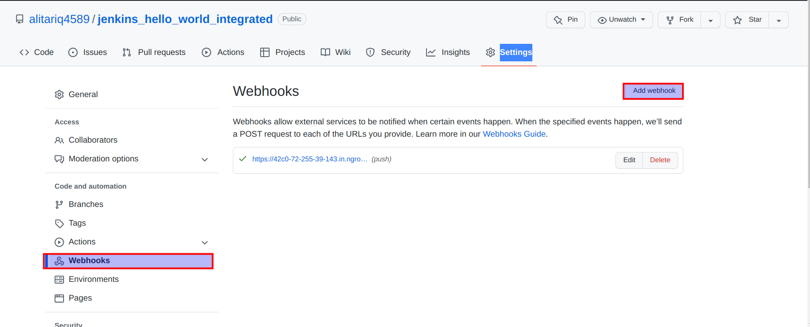
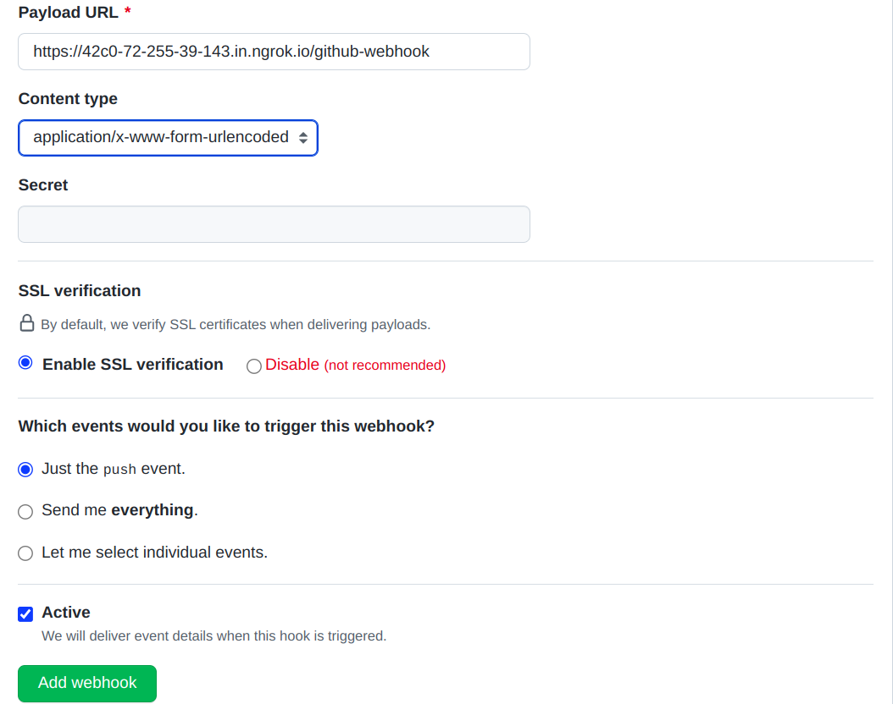

Github 'Push' webhook integration with Jenkins
Purpose of using github webhook integration with jenkins
Most of the time, after a push on the upstream repository, one may want to check the result of all the checks on the repository defined by CI/CD pipeline. This tells whether there is some issue with push and whether or not the defined checks/tests have passed. This can be achieved using github push webhook integration with jenkins.
Jenkins version and operating system specifications
The version of Jenkins and operating system specifications at the time of writing this documentation are mentioned below:
Jenkins version: 2.370
Operating System: Linux
Distribution: Ubuntu
Release: Focal (also called 20.04)
Pre-requisites
- Jenkins
- ngrok (only if a public IP is not available)
Setting up the ngrok
The localhost cannot be used for github webhook integration as it cannot be detected by online webservers. For this reason, a public ip must be used. For the sake of this documentation, ngrok is being used, which maps localhost to some public ip which can then be accessed publicly on the internet.
Following steps can be used for setting up ngrok on ubuntu:
- Install ngrok.
sudo apt install ngrok
- For using html content, a sign up is required on ngrok. So sign up on ngrok.
- Execute the following command to run ngrok which will provide a public ip mapped to localhost.
ngrok http <port number>
This will setup ngrok and provide a public ip for working online.
Setting up Jenkins for github webhook
Pre-requisites
Following plugins should be installed in jenkins:
- Git Plugin
- GitHub API Plugin
- GitHub Plugin
Jenkins Configuration in Settings
- Go to
Manage Jenkins > Configure Systemand scroll down toGitHubsection. - Click on
Add GitHub Server - Add a name for the Github server.
- Leave
API URLas is. - In Credentials, click on
Add.Jenkinswill appear in drop down, click on it.- Select
KindasSecret text - Scroll down to the
Secretand here, put down the github personal authentication token (PAT) which can be acquired from github account. - Other options can be left unattended.
- Click on
Add. Now the credentials should be added.
- Select
- In the
Credentialsdrop down, selectSecret text. - Check
Manage hooks. - Now the connection can be established and can be checked by clicking the
Test Connection. - Click
Save.
Jenkins job setup for Github Webhook
Create a new jenkins freestyle job and proceed with following settings on the configurations along with desired settings.
- Check
GitHub projectinGeneralsection and provide GitHub repository URL. - In
Source Code Managementsection, selectGit. - Give Repository URL
- In
Credentials(if the credentials are not created already), click onAdd, click onJenkinsfrom the drop down.- Select
KindasUsername with password. - In
Username, enter github username. - In
Password, enter github personal authentication token (PAT) which can be acquired from github account. - Other fields can be left unattended.
- Click on
Add
- Select
- From
Credentialsdrop down, select your added credentials. - In
Branches to buildsection, inBranch Specifierfield, enter the name of branch of github repository which needs to be built. - In
Build Triggerssection, checkGitHub hook trigger for GITScm polling.
(Following step is for checking the commit status according to the Jenkins job status, means if Jenkins job fails, commit status is alsoFailure) - Scroll down to the bottom and
Add post-build action. From drop down, selectSet GitHub commit status. - Leave other settings as is and click on
Advanced. - Check
Handle errors - Under drop down
Result on failure, selectFAILURE - Click on
ApplyandSave - By this point, Jenkins is setup for github webhooks.
Setting up github repository webhook
For the sake of this documentation, I have created a simple repository called jenkins_hello_world_integrated.
- Go to GitHub repository's settings

- In
Webhookssection, click onAdd webhook

- In Webhooks settings:
- Add
Payload URLas the URL of jenkins and append/github-webhook/at the end of it. - Select Content type
application/jason. - It is recommended to add
Secretwhich can be generated by jenkinsAPI Tokenby going to account configuration. - It is recommended to
Enable SSL verification. - Select the events which should trigger the build in jenkins.
- Check
Active. -
Click on
Add Webhook.
After this point each time the github repository is commited with a change, jenkins job will start the build and will also denote on the repository if the build has passed or failed (as can be seen in the below screenshot).